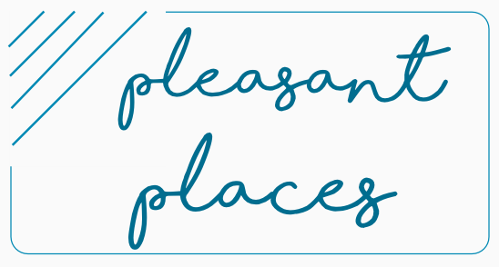

<mat-drawer #drawer mode="side" opened="false">
    <button mat-icon-button  class="sidenav-off" (click)="drawer.toggle()">
        <mat-icon class="mat-36">close</mat-icon>
    </button>
    <mat-nav-list  class="menu">
        <!--<li class="menu-text">Sarah's Blog</li>-->
        <a mat-list-item routerLink="" routerLinkActive="active" (click)="drawer.close()">Home</a>
        <a mat-list-item routerLink="/subscribe" routerLinkActive="active" (click)="drawer.close()">Subscribe</a>
        <!--<a mat-list-item routerLink="" routerLinkActive="active" (click)="sidenav.close()">About Me</a>
        <a mat-list-item routerLink="" routerLinkActive="active" (click)="sidenav.close()">Contact</a>-->
        <div *ngIf="isCreator">
            <a mat-list-item routerLink="/create" routerLinkActive="active" (click)="drawer.close()">Create Post</a>
        </div>
    </mat-nav-list>
    <mat-nav-list class="">
        <app-fire-auth></app-fire-auth>
        <!--<div class="g-signin2" data-onsuccess="onSignIn"></div>-->
    </mat-nav-list>
</mat-drawer>
 <div  >
        <button [ngStyle.gt-sm]="{'position': 'absolute', 'margin-top': '5rem', 'margin-left': '5rem'}" mat-icon-button class="sidenav-on" (click)="drawer.toggle()">
            <mat-icon class="mat-36">menu</mat-icon>
        </button>
 </div>
    


<!-- End Top Bar -->

<div fxLayout="column"fxLayoutAlign="start center"  class="site-header">
  <div class="text-center " fxFlex="95" fxFlex.mat="85" fxFlex.gt-sm="60" fxFlex.xl="50">
        <a href="REPLACE_ME">
            
        </a>
  </div>
</div>


